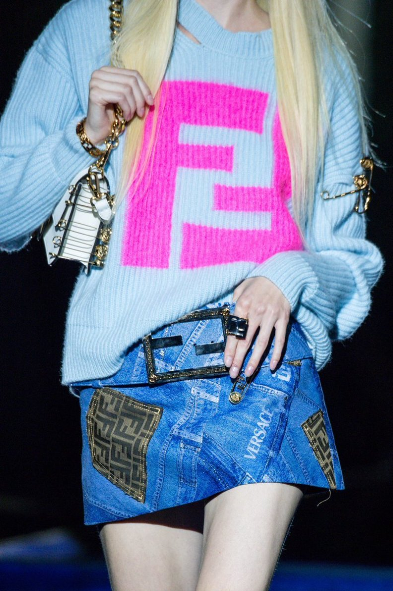
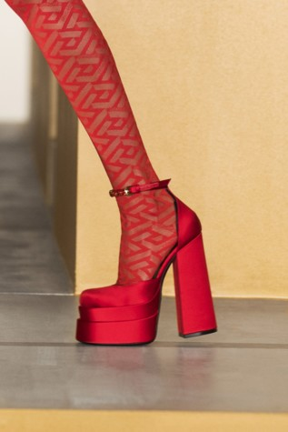

После полуторагодового перерыва недели моды вернулись в привычный офлайн-режим. Сами коллекции тоже получились необычайно выразительными и эмоциональными. Мини, вещи из нулевых, много чувственности и цвета — по следам прошедших показов рассказываем о тенденциях микро и макро.
«Голый» тренд
Коллекции сезонов осень-зима 2021/2022 и весна-лето 2022 были переполнены прозрачной одеждой и вызывающей оголенностью разных частей тела. Самый лучший способ носить прозрачную одежду — на голое тело, но в некоторых случаях поддетое под просвечивающуюся блузу бра сделает образ более пикантным. К счастью, есть множество способов украсить прозрачное платье, не теряя при этом его смысл. (Бюстье, кружева, нижнее бельё спортивном стиле, корректирующее белье, платье-комбинация)

СТАРАЯ ДОБРАЯ КОЖАНКА
У Prada и Acne Studios кожаные куртки сшиты из искусственно потертой кожи и выглядят как винтажные. А в коллекции Tod’s есть кожанка с защитными вставками на плечах, как у мотоциклистов, — у куртки заломы и объемный силуэт, как будто вещь одолжили у старшего брата. Похожие брутальные варианты из толстой кожи с потертостями можно действительно попробовать поискать в семейном гардеробе или в секонд-хендах.
ЯРКИЕ МИНИ
Здесь к месту будет вспомнить теорию индекса подола (hemline index), придуманную еще в 1920-е годы: чем короче юбки — тем лучше обстоят дела в экономике (в доказательство теории обычно приводят моду 60-х с мини-платьями, которые сменились на макси после нефтяного кризиса 1973 года). В сезоне весна-лето 2022 дизайнеры настроены оптимистично. Юбки из новых коллекций цепляют взгляды не только длиной, но и жизнерадостными расцветками: у Dior — яркий колорблокинг из 1960-х, у Prada — приятный розовый, у Loewe — оттенок морской волны в пайетках.
CATSUIT 2.0
Еще одна иллюстрация тенденции на анатомичность — это обтягивающий комбинезон, он же catsuit, который к следующему сезону станет еще чувственнее. Saint Laurent, Stella McCartney и Missoni акцентируют талию и грудь вырезами и разрезами в соответствующих частях, а Rodarte и David Koma отрезают одну штанину, повторяя знаменитый образ Дэвида Боуи (то есть Зигги Стардаста, его сценического альтер эго).
ПЛАТФОРМА
От любви до ненависти один шаг — точнее про платформы и не скажешь. Особенно про сен-лорановские босоножки Tribute на платформе и со шпилькой: впервые они появились в 2004 году, когда брендом руководил Стефано Пилати, быстро стали фетишем и к началу 2010-х обзавелись отрицательными коннотациями.
